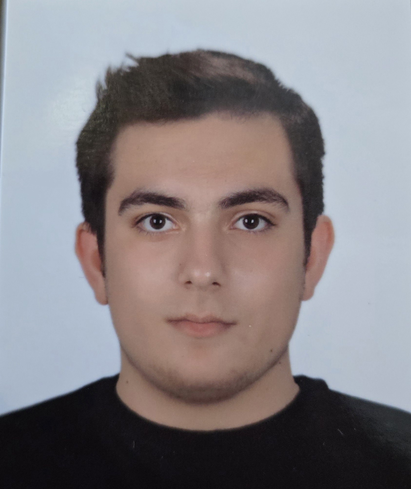

My Resume

Summary
I am a highly motivated individual who is always eager to learn new things.
Education
- Takev Fen Lisesi, Türkiye (2014-2018)
- Spraachen Academy, Germany (2018-2019)
- RWTH Aachen, Germany (2020-2024)
Computer Engineering B.Sc.
Skills
- Proficient in Microsoft Office Suite: Excel, Word, PowerPoint, Outlook
- Web Development: Skilled in HTML, CSS, JavaScript
- Programming: Proficient in C programming language
- Languages: Native Turkish speaker, fluent in English and German
Awards and Certifications
- LEGO Mindstroms Project (2020)
Other
My Hobbies Contact Me